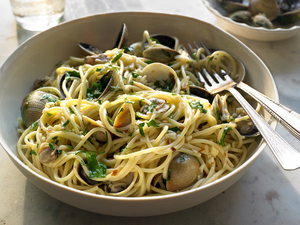

Spaghetti With Clams Recipe

Creamy and filled with Clams
Ingredients Used
- Salt
- 8 to 12 small clams in the shell, scrubbed
- 1/4 pound spaghetti
- 2 tablespoons of virgin olive oil
- 1/2 to 1 clove garlic, minced
- 1/2 dried red chili pepper or 1/4 teaspoon hot red pepper flakes
- 1/3 cup white wine
- 1 to 2 tablespoons chopped fresh Italian parsley
- Olive oil
Steps:
- Boil large pot of lightly salted water. Soak clams in cold water.
- Add spaghetti to boiling water until slightly underdone. Place saucepan over medium to low heat.
- Add olive oil, garlic, chili pepper to saucepan.
- Saute lightly and lower heat to ensure garlic doesn't brown.
- Add vermouth and clams and cover. Clams should open in 2 minutes.
- Drain water and toss small amount of olive oil. Add hot drained spaghetti, cover, and shake pot gently.
- Discard any clams that haven't opened. Add half parsley and shake pan to distribute evenly. Transfer to a plate or bowl and sprinkly remaining parsley.